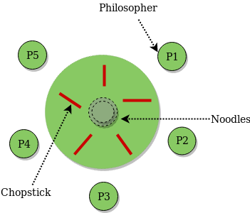

The dining philosophers problem is a classic synchronization problem in computer science, specifically in the field of concurrent programming. It illustrates challenges that can arise in resource allocation and deadlock prevention. The problem is framed around five philosophers sitting around a circular table with a bowl of rice in front of each philosopher. There is a single chopstick between each pair of adjacent philosophers, and the philosophers alternate between thinking and eating. The challenge lies in allowing each philosopher to pick up the two adjacent chopsticks (left and right) in order to eat. However, a philosopher can only pick up a chopstick if it is available. If both chopsticks are not available, the philosopher must wait until they are.
